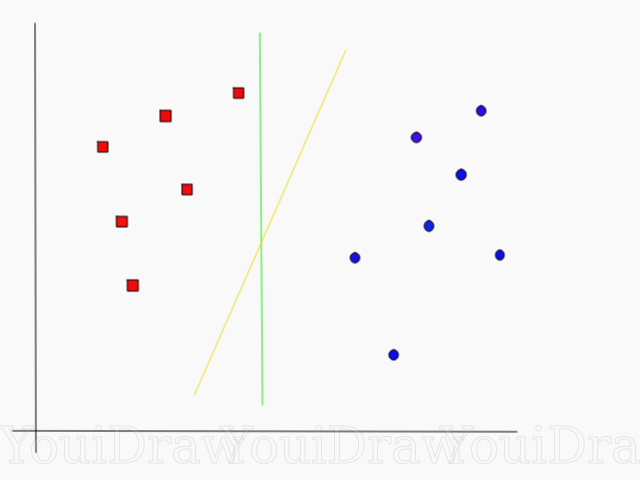
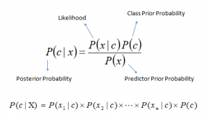
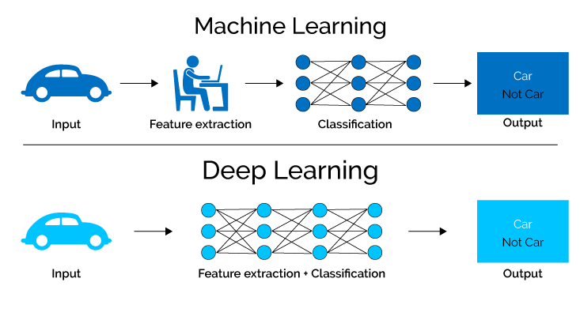

Machine Learning Models
SVM (Accuracy: 0.87): An algorithm that draws a line separates data points to classify them. However, like graph 1 illustrates, there would be multiple ways to draw the line to differentciate them. SVM finds support vectors from different classes, and finds that line that has the maximised margin to produce a more accrate model.


NB (Accuracy: 0.77): A classification algorithm based on Bays’ Theorem, like the formular illustrates, to calculate the possibility of the input that is classified to different classes, then used the highest possibility as the result. 
BERT: an open source deep learning model in which every output element is connected to every input element, and the weightings between them are dynamically calculated based upon their connection. In order words, BERT is a Tranformer approach Encoder. In this project, we used the implementation of BERT from TensorFlow Models repository. It uses L=12 hidden layers (i.e., Transformer blocks), a hidden size of H=768, and A=12 attention heads. This model has been pre-trained for English on the Wikipedia and BooksCorpus. Text inputs have been normalized the "uncased" way, meaning that the text has been lower-cased before tokenization into word pieces, and any accent markers have been stripped. Prior training the model, we use TensorFlow text Preprocess model for BERT to ensures the input are in the format that is appropriate for BERT.
